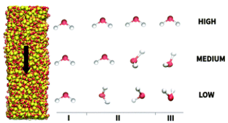

Effect of an external electric field on capillary filling of water in hydrophilic silica nanochannels

Abstract
Development of functional nanofluidic devices requires understanding the fundamentals of capillary driven flow in nanochannels. In this context, we conduct molecular dynamics simulations of water capillary imbibition in silica nanoslits under externally applied electric (E) fields with strengths between 0 and 1 V nm−1. For increasing E-fields, we observe a systematic lowering in the meniscus contact angle and a decrease in the corresponding water filling rates. These results contrast markedly the classical Washburn–Bosanquet's equation which predicts an increase in filling rates for lower water contact angles. Our study provides evidence that the observed decrease in water filling rates can be attributed to the interplay between two underlying mechanisms, a reduced fluidity of interfacial water and a systematic alignment of the water molecules in the bulk as a response to the particular strength of the applied E-field. Therefore, during water capillary filling a constant E-field applied in the direction parallel to the water imbibition leads to a lower than expected filling rate caused by a viscosity increase in the bulk and an altered solid–liquid friction on the channel walls. These coupled mechanisms governing capillarity under the action of applied E-fields could be manipulated for controlling imbibition of polar liquid solutions in nanofluidic devices.
Back